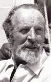
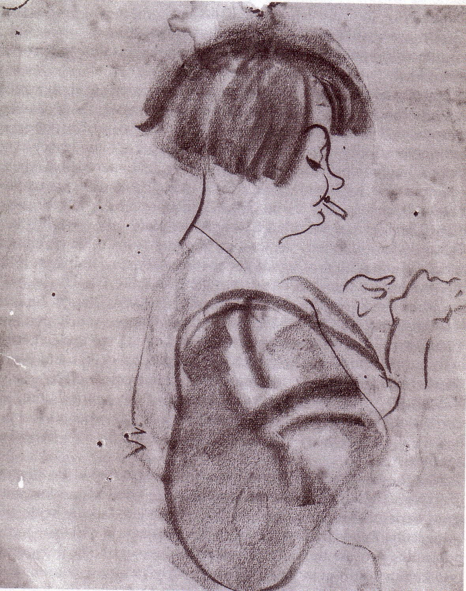
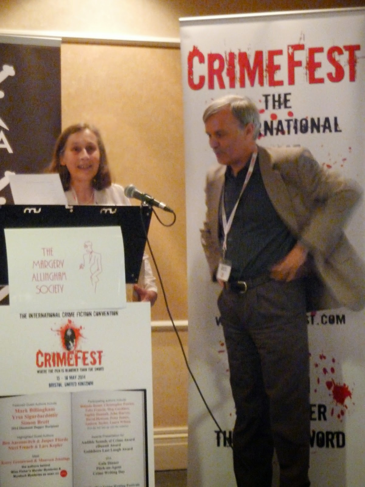

|
| "I wish, I wish ...." Peter Duck 2014 |
If I had One Wish and wasn't allowed to
use for anything altruistic (eradicating poverty & inequality, enforcing world peace etc) I think I would wish to learn
how to write short stories. I've never wanted this before. I'm a very quick and gulpy reader, too impatient (in the past) to savour the subtle pleasures of a good short story. These are the stories that force you to close the book, turn off the e-reader and let them linger in your mind. I've always been over-eager to race on, read more.
Occasionally binge-reading works even for short stories. As a child I read obsessively MauriceGriffiths's Ten Small Yachts, his
1933 follow-up to his masterpiece, The Magic of the Swatchways (1932) I read that book too but without the same compulsion. Ten Small
Yachts told me story after story
(they were true) of MG's relationships with his successive boats.
I would end one story satisfied, momentarily, that MG and his current yacht had survived whatever storms or groundings fate had thrown at them but I'd see, from the next page, that he'd proved faithless and moved on to vessels new. Horrified, I
would need to read that next story – despite the fact that the edges of
each page were already grubby with the dirt from my under-washed hands.
(I was always on Peter Duck when I read Ten Small Yachts. It didn't really work
at home.)
 |
| I once met MG when I was a teenager and was too overwhelmed to do more than blush and stutter. |
{kind=link}
{kind=link}
But
how many short story collections are there that sate the greedy
reader? I almost always turn to Margery Allingham when I want to know
the answer to anything (anything non-nautical, that is). I guzzle-read my
1950 Penguin paperback Mr Campion and
Others enjoying each clever
puzzle neatly resolved but then I admit to feeling slightly sick – as if I've binged my way though an entire box of chocolates. Allingham herself made it clear that these were purely entertainment stories, written for expatriate readers ofThe Strand magazine who wanted reassurance that everything in
England was still The Same. Too many dowagers and damsels in
distress and dear old-young, unobtrusive Campion blinking misleadingly behind his specs.
 |
| Margery Allingham at work |
{kind=link}
I've
re-read two other Allingham collections recently. The Allingham
Casebook (1969) was compiled by
her widower Pip Youngman Carter. The Allingham Minibus
(1973) was put together by Margery's sister Joyce. Neither can be
read without pauses and this, I now feel, is good. The stories that lingered longest are not the puzzle tales or even the Charlie Luke police procedurals
(the 'Coppershop Tales') for all their fine moments of psychological
insight. The stories that persuaded me to stop and reflect are a varied selection. Some are fey ('She Heard it on the Radio'),
some are melancholy ('The Correspondents'), some preposterous ('Bird
Thou Never Wert') and others vicious little studies of bullying and
abuse ('The Psychologist' & 'They Never Get Caught'). Both of
these last two are packaged in Allingham's 'mystery' box of crime and
detection but the insights on the way are easily as important as
the surprises at the end.
 |
| Presentation of the CWA Margery Allingham short story prize |
{kind=link}
Since
I've been part of the Authors Electric group I've learned to
appreciate many other varieties of short story as so many of my
colleagues write them so expertly -- and apparently effortlessly -- as part of their professional
repertoire. I wish that I could do the same (there's an AE short story anthology coming up) but as
with every form of writing the challenge is to discover one's own voice. A
highlight of the past year has been my involvement with the Margery
Allingham short story competition which is run in partnership with
the Crime Writers Association and offers £1000 prize for an
UN-published short story. The entries are deliberately anonymous –
Christie, Conan Doyle and Julia Jones could all be judged on equal
terms. The 2014 winner, Martin Edwards, is a knowledgeable and
accomplished short story writer and anthologist. His winning tale 'Acknowledgements' uses a subtly comic narrative voice that Allingham herself
would have relished.
I've been over to the CWA website and have taken a look at the other writers who were shortlisted from over three hundred entrants in 2014. Some are at an early stage in their writing careers, others are novelists or playwrights experimenting with this different form. They are all putting fingers to keyboards and having a
go. Now it's September and the 2015 competition is underway. I'm too close to the Allingham world to be involved even if I
pulled my deerstalker right down to my nose and donned an exuberant Belgian moustache, but I wish I were one of those entrants. The infallible way
to learn about short stories must to stop reading (for a while) and start writing. Perhaps
I should take myself back to Peter Duck and construct a scenario where there are Ten Small Yachts and one will be sunk every night if I don't find the magic words which will keep her afloat ...
For more information about the CWA Margery Allingham Short Story competition please visit the CWA website http://thecwa.co.uk/debuts/short-story-competition/